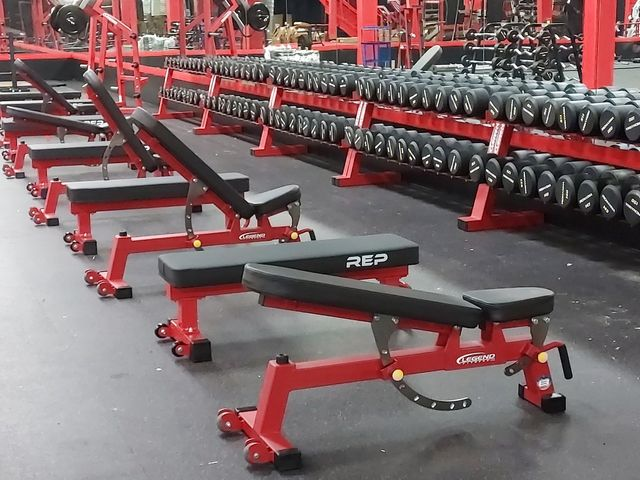
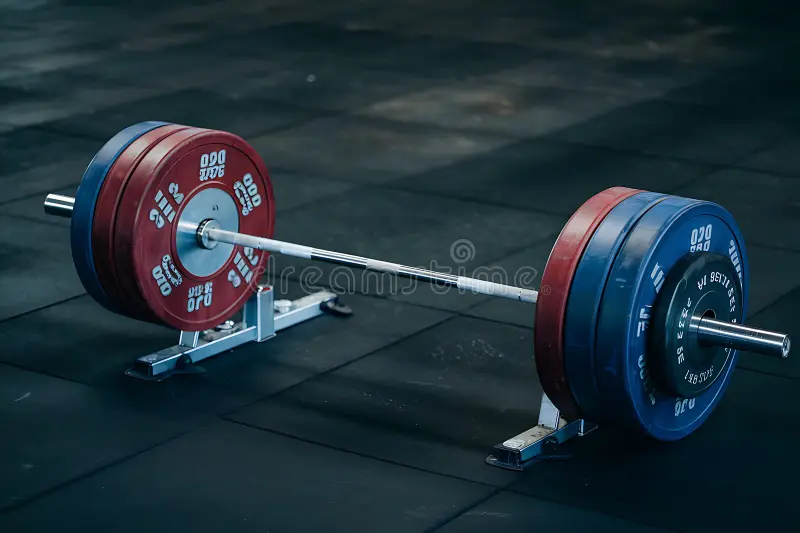

Everything you need to start your strength training journey
Weightlifting and strength training are among the most effective forms of exercise for improving overall health, body composition, and mental well-being. Unlike cardio alone, resistance training builds lean muscle mass, increases bone density, and boosts your resting metabolic rate — meaning you burn more calories even at rest.
Whether your goal is to build muscle (hypertrophy), get stronger (powerlifting), lose fat, or simply feel better day to day, the gym has something for everyone. The key is consistency, progressive overload, and proper recovery. You do not need to train every day — in fact, rest days are just as important as training days, because muscle growth happens during recovery, not during the workout itself.
Getting started can feel overwhelming, but it does not have to be. Focus on learning a handful of fundamental movements, eat enough protein, sleep 7–9 hours per night, and show up regularly. Results will follow.

The squat, bench press, and deadlift are considered the three foundational movements of strength training. Mastering these will develop strength across your entire body.
The squat is the king of lower-body exercises. It targets the quadriceps, hamstrings, glutes, and core. Proper form includes keeping your chest up, knees tracking over your toes, and descending until your hips are at or below parallel.
The bench press is the primary upper-body push movement, working the chest (pectorals), front deltoids, and triceps. Grip the bar slightly wider than shoulder-width, keep your feet flat on the floor, and lower the bar to your lower chest with control.
The deadlift works more muscle groups than almost any other exercise — hamstrings, glutes, lower back, traps, and forearms. Start with the bar over your mid-foot, hinge at the hips, maintain a neutral spine, and drive through the floor to stand tall.

Below is a simple 4-day upper/lower split suitable for beginners and intermediates. Rest periods between sets should be 2–3 minutes for compound lifts and 60–90 seconds for isolation work.
| Day | Focus | Main Exercises | Sets × Reps |
|---|---|---|---|
| Monday | Upper — Strength | Bench Press, Barbell Row, Overhead Press | 4 × 5 |
| Tuesday | Lower — Strength | Squat, Romanian Deadlift, Leg Press | 4 × 5 |
| Wednesday | Rest / Active Recovery | Walking, Stretching, Foam Rolling | — |
| Thursday | Upper — Hypertrophy | Incline DB Press, Cable Row, Lateral Raises, Curls, Tricep Pushdowns | 3 × 10–12 |
| Friday | Lower — Hypertrophy | Deadlift, Bulgarian Split Squat, Leg Curl, Calf Raises | 3 × 10–12 |
| Saturday | Rest | Full Rest — prioritize sleep & nutrition | — |
| Sunday | Rest | Full Rest — prioritize sleep & nutrition | — |
Protein is the building block of muscle. Aim for 0.7–1 gram of protein per pound of bodyweight per day. Good sources include chicken, eggs, beef, fish, Greek yogurt, cottage cheese, and protein shakes.
To build muscle, you generally need a caloric surplus (eating slightly more than you burn). To lose fat, you need a caloric deficit. Tools like a TDEE calculator can help you estimate your daily calorie needs.
Drink at least half your bodyweight in ounces of water per day, more on training days. Dehydration significantly impairs strength and endurance.
| Nutrient | Daily Target | Top Sources |
|---|---|---|
| Protein | 0.7–1g per lb bodyweight | Chicken, Eggs, Fish, Greek Yogurt |
| Carbohydrates | Varies by goal | Rice, Oats, Potatoes, Fruit |
| Fats | 0.3–0.5g per lb bodyweight | Avocado, Nuts, Olive Oil, Eggs |
| Water | 0.5 oz per lb bodyweight | Water, Milk, Fruits & Vegetables |
No program works if you do not stick to it. The best program is the one you will actually do. Show up, work hard, eat well, and sleep enough — the results will come with time.
This page is for informational purposes only and does not constitute professional medical or fitness advice. Consult a qualified professional before beginning any new exercise program.